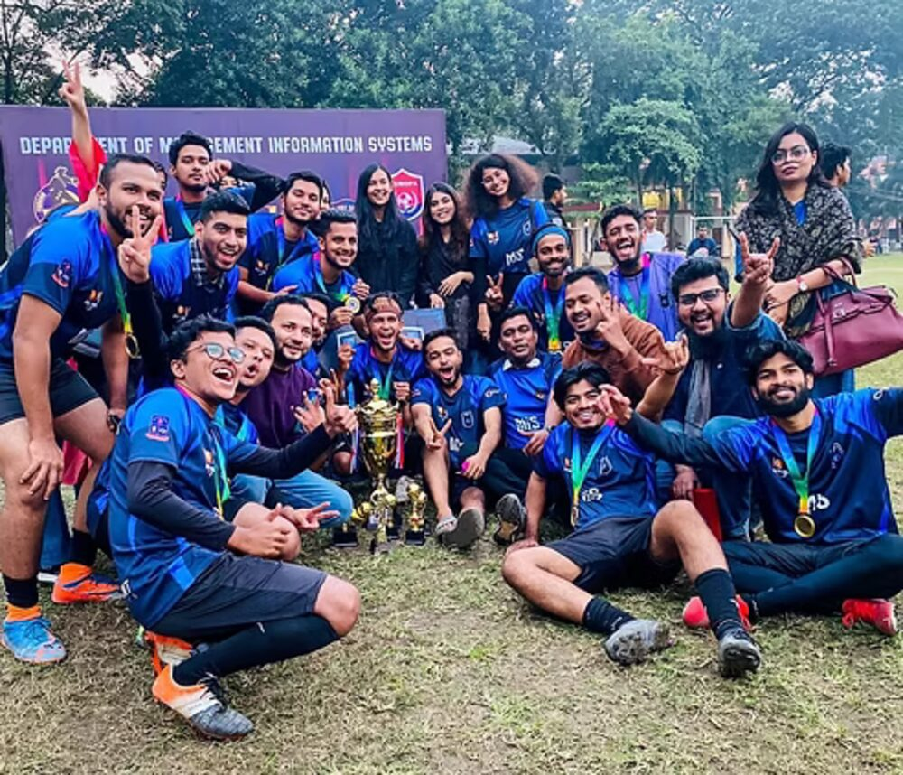
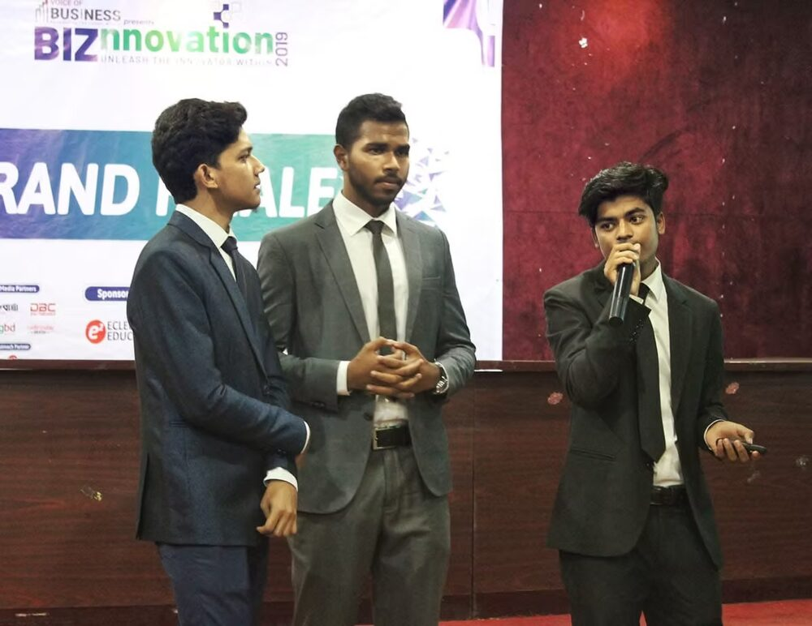
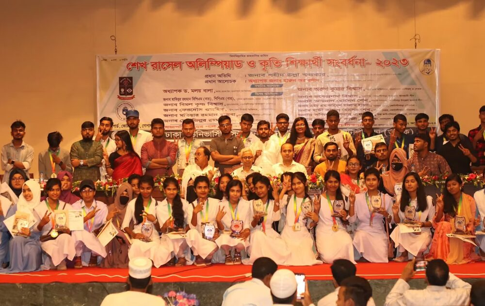
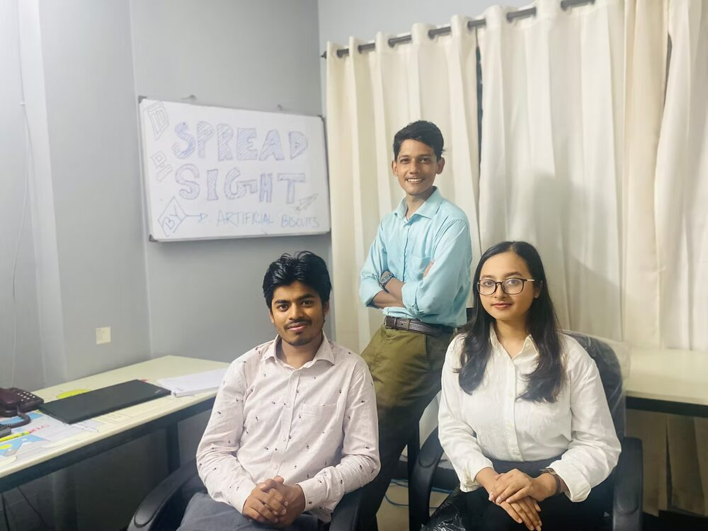
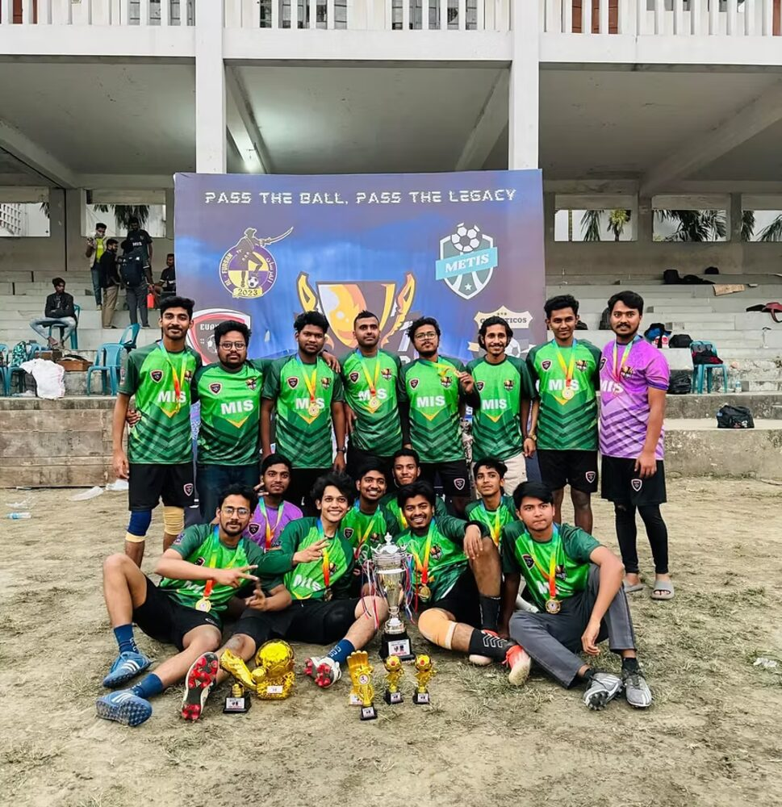
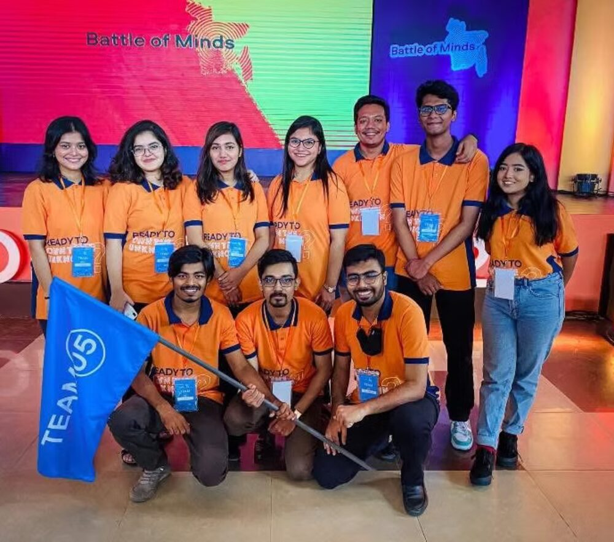
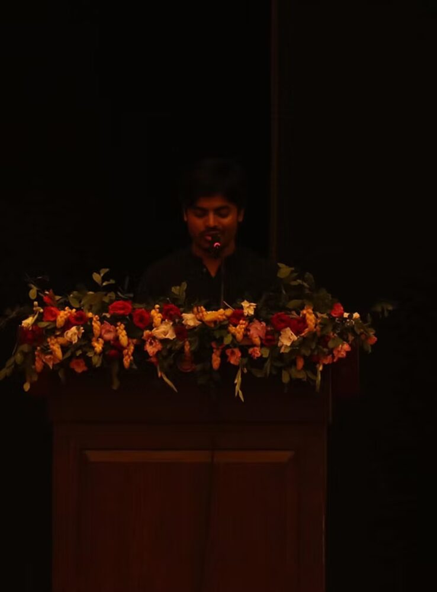
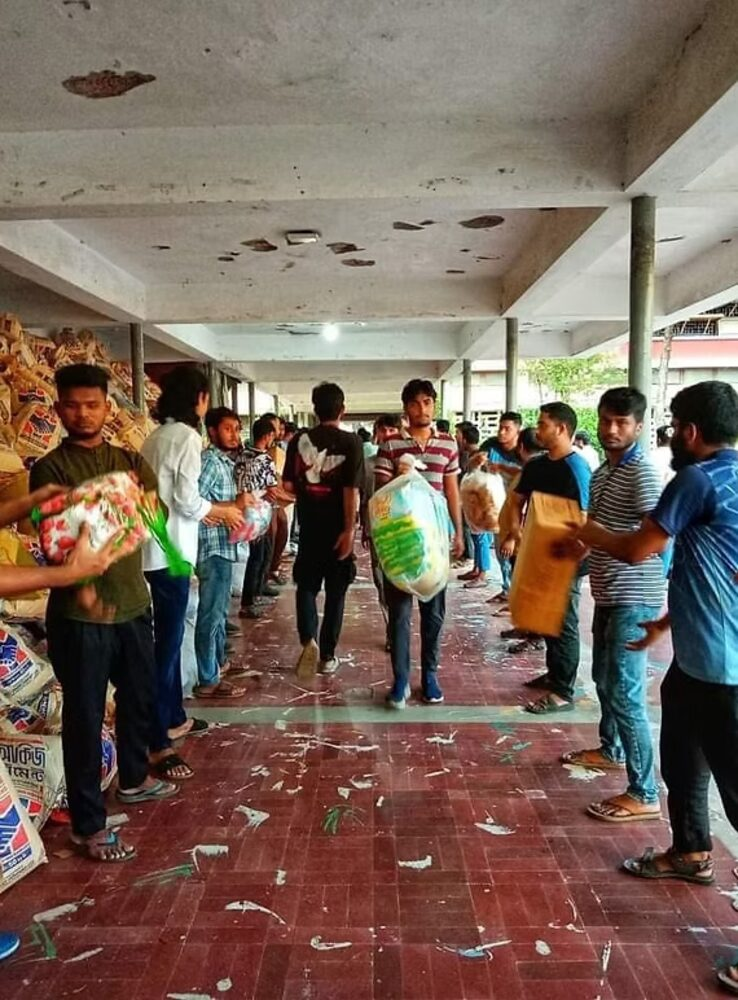

I work with data and digital systems for organizations, and I research the same things academically.
PhD aspirant, open for PhD offers and collaboration.
I was born and raised in Bangladesh, and I studied Management Information Systems at the University of Dhaka, a BBA first, then an MBA in the same subject. I did not pick MIS because I had a grand plan. I picked it because it sat between two things I liked: business, which I understood from watching people around me run small operations, and computers, which I had been curious about since I was a kid. It turned out to be a good match, and most of what I do today still traces back to that overlap.
I work as a Senior Executive in Sales-MIS at Bashundhara Group, one of the larger business groups in Bangladesh, with operations across the whole country. The work is SAP entries, sales numbers, price approvals, and reports that go up the chain so people above me can make calls with real money attached. Before this I spent close to a year at Quasem Foundation, running the reporting side of a network of eye hospitals and vision centers spread across the country, which taught me more than any course did about what happens when the people using a system are not technical, and the data is never as clean as you would want.
Turning that kind of mess into something usable. I build reports and dashboards in Power BI and Excel, write small apps and automations with Google Apps Script and Python, and set up data pipelines so information moves cleanly between departments instead of sitting stuck in someone's inbox. It is not glamorous work, but it is the kind of work a large organization genuinely runs on. The full list is on the skills page.
After office hours I do research on the same problems, from a more formal angle. How organizations adopt digital systems, how those systems support decisions in health settings, and more broadly how people behave inside large digital systems once they are actually rolled out. I am not far along yet, a couple of papers in progress and one published a few years back on a different topic, and I would rather show the real status of each one than a version that sounds more finished than it is. More on the research page.
I have a fully funded PhD offer from the University of Texas Rio Grande Valley for Fall 2026, and I am weighing it against other funded programs and collaborations before deciding where to go. The PhD is not the end goal by itself. Afterward, I want to teach digital transformation and go back to helping organizations in my own country transform, using their own data in a way that is actually meaningful rather than just collected and filed away. That is the direction everything on this site is pointing toward.
If you are a professor or researcher, the publications page has my academic CV and my research in full. If you are hiring, the experience page has my job resume and what I have actually built at each place. Or just write to me, I answer most messages within a day or two.
The fuller story, event organizing and the flood relief work, is on the leadership & community page. Football on its own has its own hobbies page.








BBA & MBA in MIS, University of Dhaka · CMA in progress, 2 of 5 levels done, ICMAB · A machine learning and AI bootcamp, mentored by faculty from UTEP and PennWest